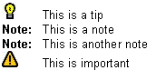

|
| |
The appearance of text within a help file is defined in a customisation file. It is much easier to copy an existing customisation file and modify it than to create a totally new file.
If no customisation file is declared in the project file, or if a file cannot be found at the specified location, a default set of style definitions are applied. The process of customising the appearance of topic text is:
Specify the name of the customisation file in the project file. For example, in the “files” section have:
<customization>customisation-file-name.xml
</customization>
Create or copy a customisation file.
Create an XML prologue. This gives the XML version conformance, the location of the DTD for source document validation and the location of the XSL file to allow the proofing XML to be viewed in a browser. The code fragment below shows a typical prologue.
<?xml version="1.0"?>
<!DOCTYPE cshcust SYSTEM "/cshlpcmp/dtd/CSHcust.dtd">
<?xml:stylesheet href="/cshlpcmp/xsl/cshcust.xsl" title="CS-Help customization" type="text/xsl"?>
If altering an existing project file, there is no need to change this section.
Declare the body of the customisation file in the <cshcust> tags:
<cshcust>customisation-file-body</cshcust>.
The rest of the project file is defined within these tags.
Create and specify a paragraph style. For example:
<parastyle name="note" font="sansserif" size="9" left="20"<b>Note:</b></parastyle>
The content of the element is styled text to put at the start of a paragraph (e.g. <b>Note:</b>). All of these entities will be specified when defining paragraph styles.
The style for the text is normal by default, however
<I></I> tags can be used to make it italic and
<b></b> tags can be used to make it bold.
Specify the symbol used for level one bullets (marked as
List Bullet style in the source rich-text file):
<listbullet1style
bulletchar="number-of-symbol"/>.
The symbol is selected by its number in the symbol table.
Specify the symbol used for level 2 bullets (marked as List
Bullet 2 style in the source rich-text file):
<listbullet2style
bulletchar="number-of-symbol"/>
Specify the left indent for lists:
<lists leftindent="list-indent-left"/>
The <titlestyle>, <bodystyle>,
<tipeffects>, <noteeffect> and
<importanteffects> styles are deprecated for 6.1 releases
but are still compatible. For details on usage of these style see the
Customisation file — xml
reference section.
|
An example customisation file is located in
\CsHelp\project\. A listing of the file is given below.
<?xml version="1.0"?>
<!DOCTYPE cshcust SYSTEM "/cshlpcmp/dtd/CSHcust.dtd">
<?xml:stylesheet href="/cshlpcmp/xsl/cshcust.xsl" title="CS Help customization" type="text/xsl"?>
<cshcust>
<parastyle name="body" font="sansserif" size="9"/>
<parastyle name="tip" font="sansserif" size="9" image="pictures\tip2" left="20"></parastyle>
<parastyle name="note" font="sansserif" size="9" left="20"<b>Note:</b></parastyle>
<parastyle name="important" font="sansserif" size="9" image="pictures\important2" left="20"></parastyle>
<body style="body"/>
<titlestyle fontstyle="sansserif" size="10"/>
<listbullet1style bulletchar="8226"/>
<listbullet2style bulletchar="8226"/>
<lists leftindent="20"/>
</cshcust>
The file has the standard XML prologue. The paragraph style, or topic
text, is set as 9 pt SansSerif in the output file.
Text in List Bullet style is displayed in the help
file with a preceding bullet symbol. This symbol is taken from position 8226 in
the symbol table. Similarly, text in List Bullet 2 style is
preceded by character 45 in the final help database.
Note is specified as being bold by the b tag. When the CS Help compiler encounters these style marks it
inserts the appropriate text (e.g. Note) in front of the marked
text, as shown below. The tip and important paragraph styles are indicated by an image located in the "pictures" folder of the project directory

The Tip, Note and Important paragraphs are indented by 20 twips. For graphics this field is optional. If not defined, text is indented by an amount equal to the width of the graphic.
Copyright ©2002 Symbian Ltd. 6.1-00174 |
|